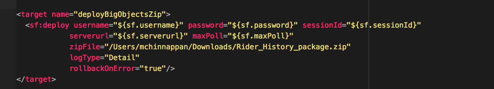

#----- ANT migration way -----
$ ant deployBigObjectsZip
Buildfile: /Users/mchinnappan/sfdc-deploy/work/build.xml
deployBigObjectsZip:
[sf:deploy] Request for a deploy submitted successfully.
[sf:deploy] Request ID for the current deploy task: 0Aff400000TdbEECAZ
[sf:deploy] Waiting for server to finish processing the request...
[sf:deploy] Request Status: InProgress (0/10) -- Processing Type: CustomObject
[sf:deploy] Request Status: Succeeded
[sf:deploy] Debugging Information:
[sf:deploy] 38.0 APEX_CODE,FINER;APEX_PROFILING,FINE;CALLOUT,INFO;DB,INFO;SYSTEM,FINEST
[sf:deploy] 07:15:32.41 (41969757)|CUMULATIVE_PROFILING_BEGIN
[sf:deploy] 07:15:32.41 (41969757)|CUMULATIVE_PROFILING|No profiling information for SOQL operations
[sf:deploy] 07:15:32.41 (41969757)|CUMULATIVE_PROFILING|No profiling information for SOSL operations
[sf:deploy] 07:15:32.41 (41969757)|CUMULATIVE_PROFILING|No profiling information for DML operations
[sf:deploy] 07:15:32.41 (41969757)|CUMULATIVE_PROFILING|No profiling information for method invocations
[sf:deploy] 07:15:32.41 (41969757)|CUMULATIVE_PROFILING_END
[sf:deploy] *********** DEPLOYMENT SUCCEEDED ***********
[sf:deploy] Finished request 0Aff400000TdbEECAZ successfully.
